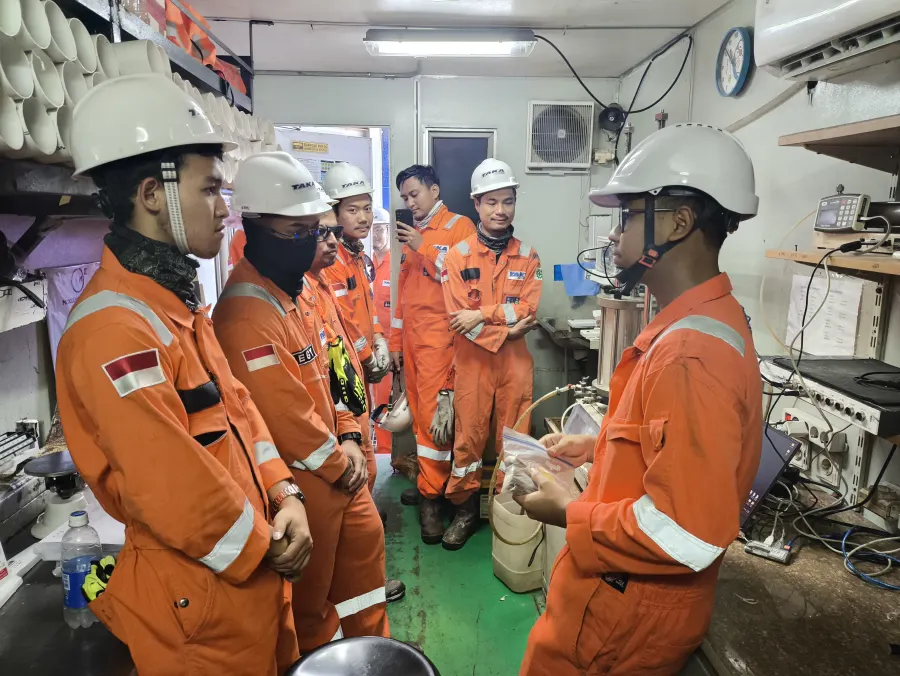
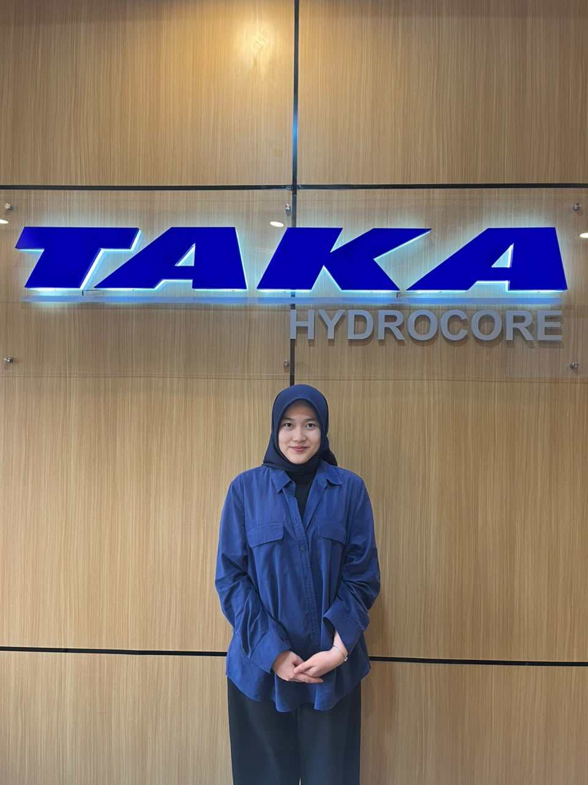

Real Work Exposure
Get involved in daily tasks related to documentation, project preparation, reporting, and department support.
Internship
THI opens internship opportunities for students who want to understand how technical projects are prepared, supported, documented, and executed in real working conditions.


For students
Interns may support technical documentation, field administration, QHSE records, commercial preparation, equipment coordination, finance, HR, general affairs, or communication work depending on the department that is available at the time.
The internship is intended to help students observe how office preparation and field execution are connected in day-to-day project delivery.
Internship experience
Get involved in daily tasks related to documentation, project preparation, reporting, and department support.
Learn directly from people who work across technical, operational, QHSE, and corporate support functions.
Understand how office coordination connects with marine, nearshore, and land-based project execution.
Build professional habits around communication, safety awareness, accuracy, and responsibility.
Student profile
The program is suited for students who want to understand how a technical service company works from the inside, whether through field-related support, office coordination, data handling, QHSE administration, finance, HR, or communication work.
How to apply
Send your CV, campus background, preferred internship period, and the area you want to learn about.
The team checks whether there is a suitable department, supervisor, and work scope available.
If your background fits, the team may contact you to align schedule, expectations, and placement needs.
Accepted interns receive a placement confirmation and basic guidance before starting the program.
Intern voices

“My internship in Human Resources gave me valuable experience in employee administration, data management, recruitment support, and internal company activities. It helped me develop administration, communication, teamwork, attention to detail, and professional work habits while giving me practical insight for a future career in Human Resources.”Jihan Shafa S. Human Resources Intern

“My experience at Taka Hydrocore changed the way I see the working world. I learned a great deal from my mentors and felt supported by an environment that encouraged me to keep growing. This moment will be one of the most memorable parts of my early career journey, and the knowledge I gained here will continue to support me in the future.”Hafizh Muchtar Achmadi Finance Intern

“My internship at PT Taka Hydrocore Indonesia was a meaningful experience, especially with the QMS team under the QHSE Department. I was involved in supporting the company’s Quality Management System and gained many new insights. The feedback I received was very useful in developing both my soft skills and technical understanding.”Kahbil Nazhif Haqiki Quality Management System Intern

“My internship at PT Taka Hydrocore Indonesia gave me an excellent opportunity to experience the real working environment firsthand. During the program, I received in-depth technical guidance related to the industry and learned to build a professional, disciplined, and solution-oriented work ethic. This experience broadened my perspective and strengthened my readiness for my future career.”Muhammad Belva Faisha Muzhaffar General Affairs Intern